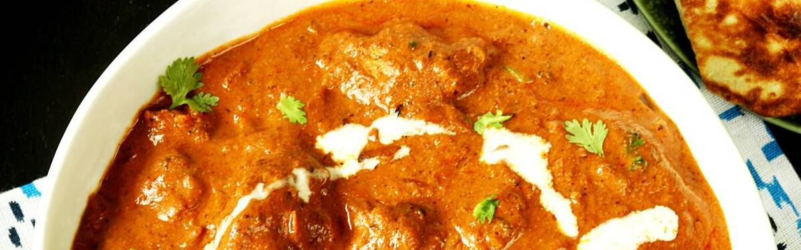

Chicken Tikka Masala

Description
Chicken Tikka Masala is a popular dish that originates from South Asian cuisine, though it has
become a hallmark
of British-Indian fusion. It consists of marinated, grilled pieces of chicken (tikka) that are then
simmered in
a creamy, tomato-based sauce seasoned with a blend of spices such as cumin, turmeric, and garam masala. The
rich, mildly spiced sauce is often thickened with yogurt or cream, giving the dish a smooth, velvety texture.
Chicken Tikka Masala is typically served with naan bread or rice, making it a flavorful and hearty meal.
The origins of Chicken Tikka Masala are widely debated, with some attributing it to Indian chefs in the
UK who
adapted traditional recipes to suit British tastes. It has since become a beloved staple in Indian restaurants
across the globe. The dish reflects the blending of traditional Indian culinary techniques with Western
preferences for rich, creamy sauces, embodying the evolution of globalized cuisine. Its popularity is a
testament to how food can bridge cultural boundaries, blending diverse flavors into a single, harmonious dish.

Ingredients
- 1 ½ pounds skinless, boneless chicken thighs
- 1 tablespoon vegetable oil
- 2 teaspoons kosher salt
- 2 teaspoons garam masala
- 2 teaspoons ground cumin
- 1 teaspoon ground coriander
- 1 teaspoon smoked paprika
- 1 teaspoon ground turmeric
- 2 tablespoons clarified butter (ghee), or more as needed
Steps
- Gather all ingredients. Place chicken in a bowl. Drizzle vegetable oil over chicken; toss to coat.
:max_bytes(150000):strip_icc():format(webp)/239867chef-johns-chicken-tikka-masala--ddmfs-Srep1-0551-43962a958fb445c081ce1c8d940b91a9.jpg)
- Whisk together salt, garam masala, cumin, coriander, paprika, turmeric, black pepper, cayenne pepper, and
cardamom in a small bowl. Sprinkle over chicken and turn to coat evenly.
- Melt clarified butter in a large, heavy skillet over high heat. Cook chicken thighs in hot butter until
browned on all sides, 5 to 10 minutes. Transfer chicken to a plate. When cool enough to handle, cut chicken
into bite-sized pieces.
:max_bytes(150000):strip_icc():format(webp)/239867chef-johns-chicken-tikka-masala--ddmfs-Srep2-0552-fa83a2b4acd34fa18829afcc1addee21.jpg)
- Make sauce: Place the skillet with chicken drippings over medium-high heat. Stir onion into the skillet;
sauté until onion softens and turns translucent, 5 to 6 minutes. Stir in tomato paste and cook until paste
caramelizes, about 5 minutes. Stir garlic and ginger into tomato-onion mixture; cook until fragrant, about 1
minute.
:max_bytes(150000):strip_icc():format(webp)/239867chef-johns-chicken-tikka-masala--ddmfs-Srep5-0559-3ff9d277b4a0429ea86fbefe6cd01fe4.jpg)
- Pour crushed tomatoes into the skillet. Bring to a boil while scraping the browned bits of food off of the
bottom of the skillet with a wooden spoon. Pour in coconut milk and chicken broth; bring to a simmer, reduce
heat to medium-low, and cook, stirring occasionally, until flavors blend and sauce is slightly reduced,
about 15 minutes.
:max_bytes(150000):strip_icc():format(webp)/239867chef-johns-chicken-tikka-masala--ddmfs-Srep6-0566-18e0d091dfec4beaa889fb6e140f6fe8.jpg)
- Stir chicken and any accumulated juices into sauce. Add cilantro and red pepper flakes; bring to a simmer,
reduce heat to medium-low, and cook until chicken is cooked through and tender, 10 to 15 minutes. Season
with salt and black pepper.
:max_bytes(150000):strip_icc():format(webp)/239867chef-johns-chicken-tikka-masala-ddmfs-3X4-0572-e02a25f8c7b745459a9106e9eb13de10.jpg)